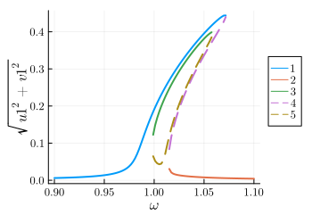
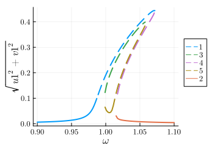

Parametrically driven Duffing resonator: 1D and 2D plots
One of the most famous effects displaced by nonlinear oscillators is parametric resonance, where the frequency of the linear resonator is modulated in time Phys. Rev. E 94, 022201 (2016). In the following we analyse this system, governed by the equations
\[\ddot{x}(t)+\gamma\dot{x}(t)+\Omega^2(1-\lambda\cos(2\omega t + \psi))x + \alpha x^3 +\eta x^2 \dot{x}+F_\text{d}(t)=0\]
where for completeness we also considered an external drive term $F_\text{d}(t)=F\cos(\omega t + \theta)$ and a nonlinear damping term $\eta x^2 \dot{x}$
To implement this system in Harmonic Balance, we first import the library
using HarmonicBalanceSubsequently, we type define parameters in the problem and the oscillating amplitude function $x(t)$ using the variables macro from Symbolics.jl
@variables Ω, γ, λ, F, x, θ, η, α, ω, ψ, t, x(t)
natural_equation = d(d(x,t),t) + γ*d(x,t) + Ω^2*(1-λ*cos(2*ω*t+ψ))*x + α*x^3 + η*d(x,t) * x^2
forces = F*cos(ω*t + θ)
diff_eq = DifferentialEquation(natural_equation + forces, x)Note that an equation of the form $m \ddot{x}+m \omega_{0}^{2}\left(1-\lambda \cos (2\omega t+\psi)\right) x+\gamma \dot{x}+\alpha x^{3}+\eta x^{2} \dot{x}=F \cos \omega t$ can be brought to dimensionless form by rescaling the units as described in Phys. Rev. E 94, 022201 (2016).
We are interested in studying the response of the oscillator to parametric driving and forcing. In particular, we focus on the first parametric resonance of the system, i.e. operating around twice the bare frequency of the undriven oscillator $\omega$ while the frequency of the external drive is also $\omega$. For this purpose, we consider a harmonic ansatz which contains a single frequency: $x(t)\approx u\cos(\omega t)+v\sin(\omega t)$. In HarmonicBalance, we can do this via add_harmonic command:
add_harmonic!(diff_eq, x, ω);and replacing this by the time independent (averaged) equations of motion. This can be simply done by writing
harmonic_eq = get_harmonic_equations(diff_eq)The output of these equations are consistent with the result found in the literature. Now we are interested in the linear response spectrum, which we can obtain from the solutions to the averaged equations (rotating frame) as a function of the external drive, after fixing all other parameters in the system. A call to get_steady_states then retrieves all steadystates found allong the sweep employing the homotopy continuation method, which occurs in a complex space (see the nice HomotopyContinuation.jl docs)
1D parameters
We start with a varied set containing one parameter, $\omega$,
fixed = (Ω => 1.0, γ => 1E-2, λ => 5E-2, F => 1E-3, α => 1.0, η=>0.3, θ => 0, ψ => 0)
varied = ω => range(0.9, 1.1, 100)
result = get_steady_states(harmonic_eq, varied, fixed)In get_steady_states, the default keywordrandom_warmup=true initiates the homotopy in a generalised version of the harmonic equations, where parameters become random complex numbers. A parameter homotopy then follows to each of the frequency values $\omega$ in sweep. This offers speed-up, but requires to be tested in each scenario againts the option random_warmup=false, which initializes the homotopy in a total degree system (maximum number of roots), but needs to track significantly more homotopy paths and there is slower. The threading keyword enables parallel tracking of homotopy paths, and it's set to false simply because we are using a single core computer for now.
After solving the system, we can save the full output of the simulation and the model (e.g. symbolic expressions for the harmonic equations) into a file
HarmonicBalance.save("parametron_result.jld2", result);During the execution of get_steady_states, different solution branches are classified by their proximity in complex space, with subsequent filtering of real (physically accceptable solutions). In addition, the stability properties of each steady state is assesed from the eigenvalues of the Jacobian matrix. All this information can be succintly represented in a 1D plot via
plot(result, x="ω", y="sqrt(u1^2 + v1^2)")This produces the following figure
The user can also introduce custom clases based on parameter conditions via classify_solutions!. Plots can be overlaid and use keywords from Plots,
classify_solutions!(result, "sqrt(u1^2 + v1^2) > 0.1", "large")
plot(result, "sqrt(u1^2 + v1^2)", class=["physical", "large"], style=:dash)
plot!(result, "sqrt(u1^2 + v1^2)", not_class="large")This overrides the default plotting style (stable=full, unstable=dashed) to give
Alternatively, we may visualise all underlying solutions, including complex ones,
plot(result, "sqrt(u1^2 + v1^2)", class="all")⠀
2D parameters
The parametrically driven oscillator boasts a stability diagram called "Arnold's tongues" delineating zones where the oscillator is stable from those where it is exponentially unstable (if the nonlinearity was absence). We can retrieve this diagram by calculating the steady states as a function of external detuning $\delta=\omega_L-\omega_0$ and the parametric drive strength $\lambda$.
To perform a 2D sweep over driving frequency $\omega$ and parametric drive strength $\lambda$, we keep fixed from before but include 2 variables in varied
varied = (ω => range(0.8, 1.2, 50), λ => range(0.001, 0.6, 50))
result_2D = get_steady_states(harmonic_eq, varied, fixed);Now, we count the number of solutions for each point and represent the corresponding phase diagram in parameter space. This is done using plot_phase_diagram. Only counting stable solutions,
plot_phase_diagram(result_2D, class="stable")⠀
In addition to phase diagrams, we can plot functions of the solution. The syntax is identical to 1D plotting. Let us overlay 2 branches into a single plot,
# overlay branches with different colors
plot(result_2D, "sqrt(u1^2 + v1^2)", branch=1, class="stable", camera=(60,-40))
plot!(result_2D, "sqrt(u1^2 + v1^2)", branch=2, class="stable", color=:red)⠀
Note that solutions are ordered in parameter space according to their closest neighbors. Plots can again be limited to a given class (e.g stable solutions only) through the keyword argument class.